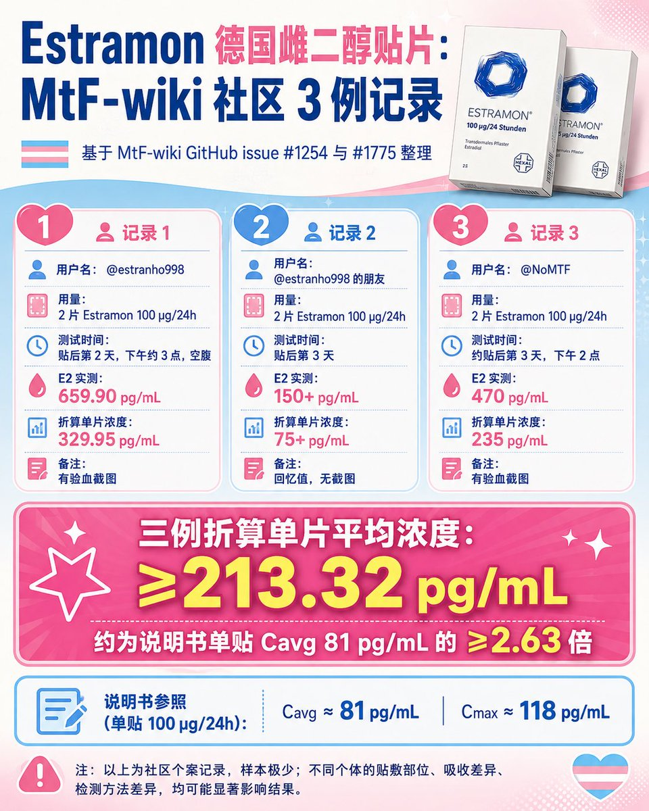

沐桃
@xiey57828
@YuwenMewo 你这不对吧，24片一盒，你咋搞得28片

唐毓文
@YuwenMewo
综合来看最优秀的雌二醇补充方式就是德国雌二醇贴片
很神奇的是，按照厂家说明书，单片平均81 pgml，最高118 pgml
但是按照目前全网三位的实绩测试来说
第一位，2024年8月10日贴片两天后测试
得出雌二醇单片avg：
329.95 pg/ml
（数据来源mtfwiki issue#1254 by estranho998 有医学报告图片） https://t.co/TkKxKwMIkW